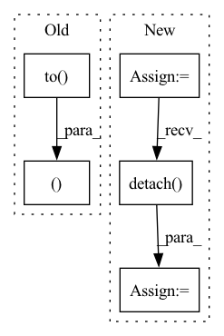

Pattern ID :31129
Before Change
substitute_input_shape,
victim_input_targets,
)
x = x.to( torch.float32)
import pdb
pdb.set_trace()
config = set_evasion_model(query, victim_input_shape, victim_input_targets)
x_adv, y_adv = init_hopskipjump(config, data)
x = torch.cat((x, x_adv))
y = torch.cat((y, y_adv))
return x, y
@register_synth
def seeded_hopskipjump(After Change
config = set_evasion_model(query, victim_input_shape, victim_input_targets)
internal_limit = int(query_limit * 0.5)
evasion_limit = int(query_limit * 0.5)
attack = HopSkipJump(
config,
False,
norm="inf",
max_iter=evasion_limit,
max_eval=evasion_limit,
init_eval=10,
)
X, y = copycat(
data,
query,
internal_limit,
victim_input_shape,
substitute_input_shape,
victim_input_targets,
)
print(X.shape)
result = attack.generate(X)
result = torch.as_tensor(result)
result = result.clone().detach()
print(result.shape)
y = torch.Tensor([query(x) for x in result])
y = y.long()
return result, yIn pattern: SUPERPATTERN
Frequency: 3
Non-data size: 5
Instances Fragment ID: 91449683
Project Name: trailofbits/privacyraven
Commit Name: dd71a208fe41d3cb3854115c2ce4d4318b3d52e0
Time: 2020-10-21
Author: suhashussain1@gmail.com
File Name: src/privacyraven/extraction/synthesis.py
M Class Name: AnonimousClass
N Class Name: AnonimousClass
M Method Name: hopskipjump(6)
N Method Name: hopskipjump(6)
M Parent Class:
N Parent Class:
M File Name: src/privacyraven/extraction/synthesis.py
N File Name: src/privacyraven/extraction/synthesis.py
M Start Line: 139
M End Line: 155
N Start Line: 118
N End Line: 144
Before Change
substitute_input_shape,
victim_input_targets,
)
x = x.to( torch.float32)
// import pdb
// pdb.set_trace()
config = set_evasion_model(query, victim_input_shape, victim_input_targets)
x_adv, y_adv = init_hopskipjump(config, data)
x = torch.cat((x, x_adv))
y = torch.cat((y, y_adv))
return x, y
@register_synth
def seeded_hopskipjump(After Change
victim_input_targets,
)
print(X.shape)
result = attack.generate(X)
result = torch.as_tensor(result)
result = result.clone().detach()
print(result.shape)
y = torch.Tensor([query(x) for x in result])
y = y.long()
return result, y
Fragment ID: 91449682
Project Name: trailofbits/privacyraven
Commit Name: ce663f3b0895905a2731bf1907af06f1f99fbb12
Time: 2020-10-21
Author: suhashussain1@gmail.com
File Name: src/privacyraven/extraction/synthesis.py
M Class Name: AnonimousClass
N Class Name: AnonimousClass
M Method Name: hopskipjump(6)
N Method Name: hopskipjump(6)
M Parent Class:
N Parent Class:
M File Name: src/privacyraven/extraction/synthesis.py
N File Name: src/privacyraven/extraction/synthesis.py
M Start Line: 159
M End Line: 175
N Start Line: 118
N End Line: 144
Before Change
num_batches = int(math.ceil(float(num_generate) / float(batch_size)))
for i in tqdm(range(num_batches), disable=disable_tqdm):
real_images, real_labels = next(data_iter)
real_images, real_labels = real_images.to(device), real_labels.to(device)
fake_images, _, _, _, _ = sample.generate_images(z_prior=z_prior,
truncation_factor=truncation_factor,
batch_size=batch_size,
z_dim=z_dim,After Change
generator_synthesis=generator_synthesis,
style_mixing_p=0.0,
cal_trsp_cost=False)
fake_images = (fake_images+1)*127.5
fake_images = fake_images.detach() .cpu().type(torch.uint8)
real_embeddings, _ = eval_model.get_outputs(real_images)
fake_embeddings, _ = eval_model.get_outputs(fake_images) Fragment ID: 91449686
Project Name: postech-cvlab/pytorch-studiogan
Commit Name: 0591c77840c0e25760f1173ed716fcce57a2a36c
Time: 2021-12-25
Author: first287@naver.com
File Name: src/metrics/prdc_trained.py
M Class Name: AnonimousClass
N Class Name: AnonimousClass
M Method Name: compute_real_fake_embeddings(17)
N Method Name: compute_real_fake_embeddings(17)
M Parent Class:
N Parent Class:
M File Name: src/metrics/prdc_trained.py
N File Name: src/metrics/prdc_trained.py
M Start Line: 24
M End Line: 24
N Start Line: 42
N End Line: 43